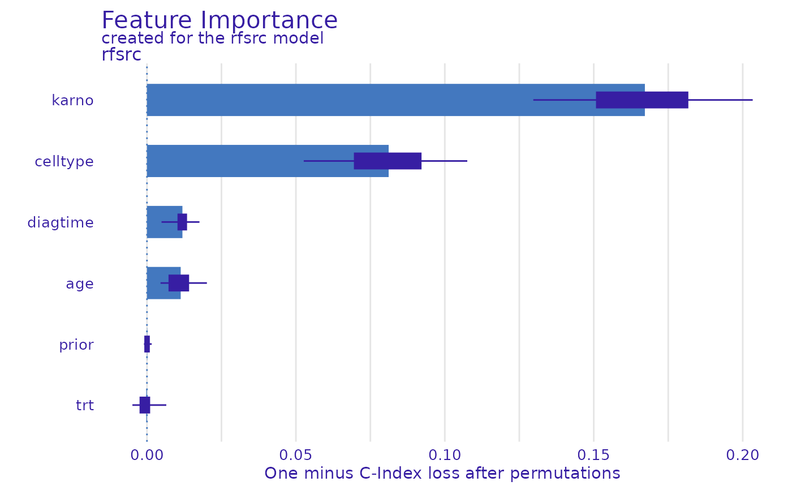

This function plots variable importance calculated as changes in the loss function after variable drops.
It uses output from feature_importance function that corresponds to
permutation based measure of variable importance.
Variables are sorted in the same order in all panels.
The order depends on the average drop out loss.
In different panels variable contributions may not look like sorted if variable
importance is different in different in different models.
# S3 method for feature_importance_explainer
plot(
x,
...,
max_vars = NULL,
show_boxplots = TRUE,
bar_width = 10,
desc_sorting = TRUE,
title = "Feature Importance",
subtitle = "default"
)a feature importance explainer produced with the feature_importance() function
other explainers that shall be plotted together
maximum number of variables that shall be presented for for each model
By default NULL what means all variables
logical if TRUE (default) boxplot will be plotted to show permutation data.
width of bars. By default 10
logical. Should the bars be sorted descending? By default TRUE
the plot's title, by default 'Feature Importance'
the plot's subtitle. By default - NULL, which means
the subtitle will be 'created for the XXX model', where XXX is the label of explainer(s)
a ggplot2 object
Find more details in the Feature Importance Chapter.
Explanatory Model Analysis. Explore, Explain, and Examine Predictive Models. https://ema.drwhy.ai/
# \donttest{
library(survex)
library(randomForestSRC)
#>
#> randomForestSRC 3.2.1
#>
#> Type rfsrc.news() to see new features, changes, and bug fixes.
#>
#>
#> Attaching package: ‘randomForestSRC’
#> The following object is masked from ‘package:parsnip’:
#>
#> tune
library(survival)
model <- rfsrc(Surv(time, status) ~., data = veteran)
explainer <- explain(model)
#> Preparation of a new explainer is initiated
#> -> model label : rfsrc ( default )
#> -> data : 137 rows 6 cols ( extracted from the model )
#> -> target variable : 137 values ( 128 events and 9 censored , censoring rate = 0.066 ) ( extracted from the model )
#> -> times : 49 unique time points , min = 1 , mean = 110.6971 , median = 80 , max = 562.52
#> -> times : ( generated from y as 50 time points being consecutive quantiles (0.00, 0.02, ..., 0.98) )
#> -> predict function : sum over the predict_cumulative_hazard_function will be used ( default )
#> -> predict survival function : stepfun based on predict.rfsrc()$survival will be used ( default )
#> -> predict cumulative hazard function : stepfun based on predict.rfsrc()$chf will be used ( default )
#> -> model_info : package randomForestSRC , ver. 3.2.1 , task survival ( default )
#> A new explainer has been created!
mp <- model_parts(explainer, loss = loss_one_minus_c_index, output_type = "risk")
#> Registered S3 method overwritten by 'ingredients':
#> method from
#> plot.feature_importance_explainer survex
plot(mp)

# }